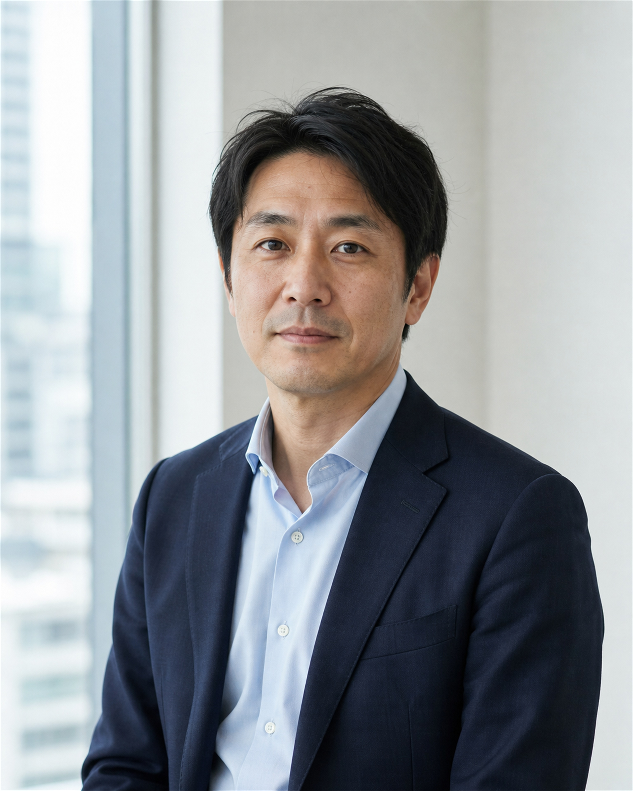

M東湾ワークメール
変更版報告書（R-17b）の送付について
変更版報告書（R-17b）の送付について

竹内直哉／東湾都市開発株式会社宛先: 佐久間圭／世田渋谷区都市整備部
佐久間様
先日共有した報告書（R-17）について、当社で予定している基礎工事と排水対策を前提に、変更版報告書（R-17b）を作成しました。
区で作成予定の公開資料（R-18）には、添付の内容を反映していただけますでしょうか。
社内では、本資料を前提に実施設計と今後の工程を進める方針です。
東湾都市開発株式会社
竹内直哉
佐久間圭／世田渋谷区都市整備部宛先: 竹内直哉／東湾都市開発株式会社
竹内様
添付を確認しました。
報告書（R-17）では、現在の設計のまま着工すべきではないと判断されています。一方、R-17bでは測定値と結論の両方が変わっています。
R-17の提出後に、新たなボーリング調査や地下水位の測定を行ったのでしょうか。
また、この変更について、京西地盤解析の確認は受けていますか。
世田渋谷区都市整備部
佐久間圭
竹内直哉／東湾都市開発株式会社宛先: 佐久間圭／世田渋谷区都市整備部
佐久間様
新たな現地調査は実施していません。
R-17bの数値は、当社が予定している対策工事の完了後を想定し、社内で置き換えたものです。京西地盤解析による再測定や再発行ではありません。
本内容については社内承認を得ています。公開資料についても、R-17bを基に作成をお願いします。
竹内
佐久間圭／世田渋谷区都市整備部宛先: 竹内直哉／東湾都市開発株式会社
竹内様
承知できません。
対策後の想定値を、現地で測定した数値の代わりに使うことはできません。R-17を基礎資料として記載しながら、異なる数値と結論を公開すれば、住民には経緯が分かりません。
公開資料（R-18）にはR-17の判断を記載し、追加調査が終わっていないことも明らかにするべきです。
明日の内部会議で、改めて意見を出します。
佐久間